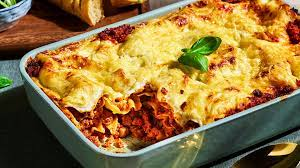

Lasagne

Description
Découvrez la recette de Lasagne bolognaise à faire en 30 minutes.
Ingrédients
- 1 paquet de lasagnes
- 3 oignons jaunes
- 1 carotte
- 800g de purée de tomate
- 2 feuilles de laurier
- thym
- 70g de fromage râpé
Étapes
- Faire revenir gousses hachées d'ail et les oignons émincés dans un peu d'huile d'olive.
- Ajouter la carotte et la branche de céleri hachée puis la viande et faire revenir le tout.
- Au bout de quelques minutes, ajouter le vin rouge. Laisser cuire jusqu'à évaporation.
- Ajouter la purée de tomates, l'eau et les herbes. Saler, poivrer, puis laisser mijoter à feu doux 45 minutes.